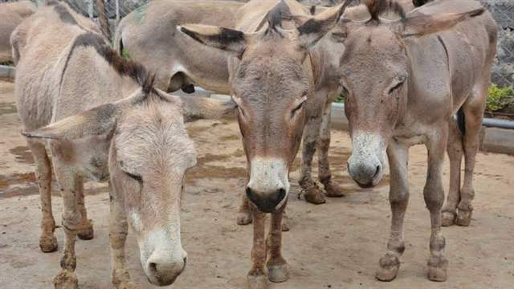

They Were Not Meat. They Were Lives.
Published

On the night of November 16th, authorities raided a house in Sector D-14, Islamabad, and uncovered a building that has shaken our entire city.
Inside that building, the Islamabad Food Authority recovered approximately 800 kilogrammes of suspected illegal meat, believed to be donkey, dog and other animals’ meat. They also found live donkeys, one donkey burnt alive, dogs, cats, live turtles, a jackal and live pangolins. The meat was destroyed at the site, and the surviving animals were handed over to NGOs and wildlife authorities.
Under the nose of city authorities, this death chamber operated smoothly for months. Behind those closed doors were so many lives that suffered in silence.
Imagine what those animals endured. Donkeys — gentle, hardworking, loyal animals — tied up, starved, terrified, watching their companions slaughtered and burned. Dogs, who trust humans unconditionally, locked in a place where they were not pets, but products. Turtles, jackal, pangolins — wild animals who belong in nature, stolen from their habitats, caged and traumatised.
These animals were not just kept in poor conditions. They were starved and tortured by fear. They lived with the sounds, the smells, and the terror of a slaughterhouse. Many of them will carry that trauma for the rest of their lives.
This is absolutely wrong. On every level — morally, legally, and humanely. No animal deserves to be slaughtered in secret, in filth, without any documentation, without any mercy. No animal deserves to live its last days in fear.
At Strays Home, we believe every life matters. And we refuse to look away.
The donkeys are coming home to Strays Home.
We are proud to share that all the donkeys rescued from this slaughterhouse will have a safe, permanent place at Strays Home. They will never be beaten, starved, sold, or slaughtered again. They will have food, water, veterinary care, open space and most importantly — kindness.
They will finally get to just be donkeys. To rest. To heal. To trust again.
But to give them that life, we need your help.
We need to urgently build a proper shed and a safe enclosure for them — a place where they can recover from their trauma, feel the sun without fear, and sleep without worry.
If you want to help these survivors, donation details are available on our website. Every contribution, no matter how small, will go directly towards building their new home.
They have survived the worst of humanity. Now, let us show them the best of it.
Donate today. Help us build a safe home for these slaughterhouse survivor donkeys.
— Team Strays Home